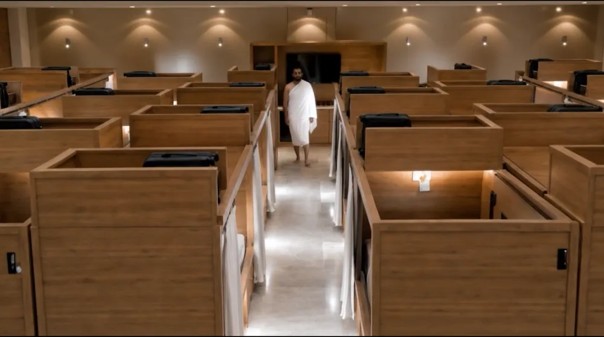

Shape the concept.
Develop the sleeping pod around the client’s brief and its intended use during Hajj.
Within the scale of Hajj, a space for one person to rest. A sleeping pod concept brought to life through AI design and film.
CLIENT WORK · SAUDI ARABIAA Saudi company serving the Hajj and custom Umrah gift market, with a brief centred on the pilgrim’s experience.
AFWAJ asked me to develop a sleeping pod design for Hajj, then create an AI film showing how it would be used. The task was to turn a set of client requirements into something people could see, understand and imagine using.
I carried the project from AI-assisted product concept design into a visual demonstration, keeping the client’s needs at the centre of both.
The film opens with the scale of Hajj accommodation, then moves closer: one pod, one pilgrim, one moment of rest.
Warm wood, soft lighting and a privacy curtain give the concept a calm visual language. The story then follows everyday actions: opening the fold-down table, putting belongings away, drawing the curtain, sitting down for a meal and reading.
These small moments make the design understandable. The pod is introduced through its structure and shown through the experience it is intended to support.

The hardest part was keeping the product recognisable as the story moved.
During generation, the main product repeatedly changed in appearance. Each change could break the connection between the design being presented and the pod being used in the next scene.
Under a tight deadline, I worked through those variations while responding to the client’s requested details. The creative challenge was to balance a coherent product identity, clear demonstrations and a finished film that communicated the idea.
Develop the sleeping pod around the client’s brief and its intended use during Hajj.
Work through changing AI outputs so the core product remains recognisable across the film.
Connect the pod’s design with ordinary actions that explain how the space is used.
According to feedback shared by the client, the film was presented to Saudi Arabia’s Minister of Hajj and Umrah, who responded positively to its visual consistency and overall presentation.
For me, that response underlined the value of the work: a complex idea had become a clear visual story that the client could confidently present.
Source: client feedback shared with the designer.
A sleeping pod concept and an AI film that bring product, purpose and experience into one story.
The project demonstrates how I use AI to communicate a client’s idea: developing its visual form, working through consistency challenges and showing what it could mean in everyday use.
The film presents an AI-generated design concept and usage visualisation.